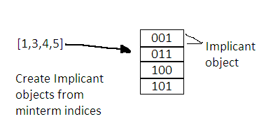
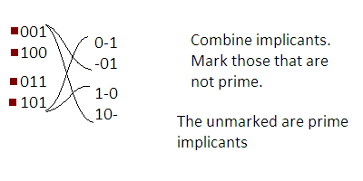
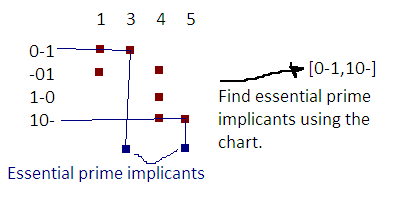

The source code by itself is well commented and relatively easy to understand. However, there is one particular function, findEsPrImplicants, that needs a more in-depth discussion. It will be covered below.
The three parts of the function are:
Each will be covered below. There are other functions and definitions as well. The util object contains utility functions for ease in development. There is a class, the Implicant class, that represents an implicant. Other functions are mostly for formatting and parsing. The source may be viewed if one wants to learn more about these utility elements.
Have fun.
// Construct initial table, get implicants from minterms
var implicants = [];
var mt, obits, iarr, imp;
var i, n;
for(i = 0, n = minterms.length; i < n; i++){
mt = minterms[i] = parseInt(minterms[i]);
imp = createImplicantWithMinterm(mt);
imp.setPrime(true); // assume prime until proven guilty
obits = util.popCount(mt);
iarr = implicants[obits] = implicants[obits] || [];
iarr.push(imp);
}
First, a data structure is built from and for the minterms so that they would
be easier to manipulate. This data structure is the Implicant class.
mt = minterms[i] = parseInt(minterms[i]); imp = createImplicantWithMinterm(mt);createImplicantWithMinterm returns an Implicant object that represents the minterm index mt. We then have to store these Implicant objects in an array such that they would be arranged like this:
implicants[0] = [000] // 0 one bits implicants[1] = [001, 010, 100] // 1 one bits implicants[2] = [011, 101, 110] /// 2 one bits implicants[3] = [111] // 3 one bitsNote that the number of 1 bits in a minterm should be the same as its index. To store the Implicants in this way, the number of one bits is counted.
obits = util.popCount(mt); iarr = implicants[obits] = implicants[obits] || []; iarr.push(imp);
Using the popCount function we can get the number of one bits, and thus the array index of the Implicants. popCount returns the number of 1 bits of the first argument.

do{
hasCombined = false;
nextImplicants = [];
for(i = 0, n = implicants.length - 1; i < n; i++){
// for each pair of adjacent rows
g1 = implicants[i] = implicants[i] || [];
g2 = implicants[i+1] = implicants[i+1] || [];
// for each implicant in both rows
for(j = 0, m = g1.length; j < m; j++){
imp1 = g1[j];
for(k = 0, o = g2.length; k < o; k++){
imp2 = g2[k];
// combine implicants
comb = imp1.combine(imp2);
if(comb){
iarr = nextImplicants[i] = nextImplicants[i] || [];
iarr.push(comb);
imp1.setPrime(false);
imp2.setPrime(false);
comb.setPrime(true);
hasCombined = true;
}
}
}
}
// store uncombined implicants as prime implicants
for(i = 0, n = implicants.length; i < n; i++){
g1 = implicants[i];
for(j = 0, m = g1.length; j < m; j++){
imp = g1[j];
if(imp.prime){
primeImplicants.push(imp);
}
}
}
implicants = nextImplicants;
}while(hasCombined);
For every pair of adjacent groups, we check each implicant if they can be combined. For example, the two groups {001,010,100}, {011,101} are adjacent and shall undergo the checking.
for(i = 0, n = implicants.length - 1; i < n; i++){
// for each pair of adjacent rows
g1 = implicants[i] = implicants[i] || [];
g2 = implicants[i+1] = implicants[i+1] || [];
For every pair of adjacent groups, g1 and g2...
// for each implicant in both rows
for(j = 0, m = g1.length; j < m; j++){
imp1 = g1[j];
for(k = 0, o = g2.length; k < o; k++){
imp2 = g2[k];
We check each implicant imp1 and imp2
which come from groups g1 and g2, respectively.
// combine implicants comb = imp1.combine(imp2);Here we try to combine the implicants. The combine method of the Implicant attempts to combine two implicants, and returns the combined Implicant if successful, otherwise it returns null. As stated in the Quine-McCluskey algorithm, two implicants are combined if they are adjacent in Gray code (they differ in one bit).
if(comb){
iarr = nextImplicants[i] = nextImplicants[i] || [];
iarr.push(comb);
imp1.setPrime(false);
imp2.setPrime(false);
comb.setPrime(true);
hasCombined = true;
}
If combining is successful, the results are stored in a nextImplicants
array for the next round of combining. This is akin to transferring the
grouped implicants to the next column in a manual Quine-McCluskey pen-and-paper
implementation.
Since imp1 and imp2 have been combined, they are no longer prime. setPrime(false) is called on them. It is assumed that the resulting combination is prime. The next iteration will determine whether the new Implicant is truly prime.
hasCombined is then set to true.
After combining in this column, we store the implicants that weren't combined because they are now our Prime implicants.
// store uncombined implicants as prime implicants
for(i = 0, n = implicants.length; i < n; i++){
g1 = implicants[i];
for(j = 0, m = g1.length; j < m; j++){
imp = g1[j];
if(imp.prime){
primeImplicants.push(imp);
}
}
}
Check every group (g1) and every implicant in the group
(imp = g1[j]). If the implicant is prime, then it is pushed
into the primeImplicants array.
implicants = nextImplicants;We then proceed to the next round of combining. The process is repeated until there are no more implicants to combine. We check for the hasCombined flag to check whether to stop the loop.
}while(hasCombined);The hasCombined will be false when there are no more implicants to combine. After the loop, the prime implicants are now identified and stored.
// remove duplicates
for(i = primeImplicants.length-1; i >= 0; i--){
for(j = i-1; j >= 0; j--){
imp1 = primeImplicants[i];
imp2 = primeImplicants[j];
if(imp1.binary == imp2.binary && imp1.dnm == imp2.dnm){
imp2.minterms = imp1.minterms.length > imp2.minterms.length ? imp1.minterms : imp2.minterms;
primeImplicants.splice(i, 1);
break;
}
}
}
Lastly, duplicate prime implicants are removed to avoid problems later.
To find the essential prime implicants, check each of the given minterms and count the implicants that "cover" the minterm. A minterm that is covered by only one implicant is covered by an essential implicant. So, if the implicant count is one, then that one implicant is essential.
// find "covers" for each minterm
for(i = primeImplicants.length-1; i>=0; i--){
imp = primeImplicants[i];
for(j = imp.minterms.length-1; j>=0; j--){
mintermCovers[imp.minterms[j]].push(imp);
}
}
Each prime implicant is processed. So, for each minterm of the implicant,
the implicant is pushed into an array for that minterm.
for(j = imp.minterms.length-1; j>=0; j--){
mintermCovers[imp.minterms[j]].push(imp);
}
The mintermCovers array is an array of arrays of Implicants.
It is arranged such that there is an array for each minterm; and in that inner array,
the implicants covering the corresponding minterm are contained.
In the following example, the minterms are 1, 3, 4, and 5; so we will have three prime implicants 0-1, -01, and 10-. The mintermCovers array will be like this:
mintermCovers[1] = {-01, 0-1} // implicants for minterm 1
mintermCovers[3] = {0-1} // implicants for minterm 3
mintermCovers[4] = {10-} // ...
mintermCovers[5] = {-01, 10-}
Note that the index of each implicant array is the corresponding minterm.
Now the counting/tallying part is done, we can easliy identify which prime implicants are essential.
The essential prime implicants are those that are alone in the array. In other words, those that are in a one-length array are essential prime implicants. In the example, they are 0-1, and 10-.
mintermCovers[3] = {0-1}
mintermCovers[4] = {10-}
// finding essential prime implicants
var covers;
for(i = mintermCovers.length-1; i>=0; i--){
covers = mintermCovers[i];
Each minterm covers array is checked.
if(covers && covers.length == 1){
// minterm with single cover is covered by an essential prime implicant
imp = covers[0];
essentialImplicants.push(imp);
If the length is one, it means there is only one cover, which means that that implicant is essential. The implicant is pushed into an essentialImplicants array.

for(j = imp.minterms.length-1; j>=0; j--){
mintermCovers[imp.minterms[j]].length = 0;
}
}
}
For each essential prime implicant found, we must erase other implicants
in mintermCovers that overlaps with the essential implicant. So, for each minterm
of the essential implicant, we clear the implicant array corresponding to the minterm.
We now have our essential prime implicants, but not all minterms are covered by the essential implicants. This happens when the implicants overlap each other in a specific way. That is, they form a circular chain of overlapping implicants. These non-essential uncovered implicants must still be included to complete the function.
// find minterms left uncovered by essential implicants
// (all)
for(i = mintermCovers.length-1; i>=0; i--){
covers = mintermCovers[i];
if(covers && covers.length){
Each cover array is checked again. Note that some cover arrays are already cleared by the essential prime
implicants. Here we are now checking for those that are not cleared. We check the length if it is not zero.
imp = covers[0];
essentialImplicants.push(imp);
for(j = imp.minterms.length-1; j>=0; j--){
mintermCovers[imp.minterms[j]].length = 0;
}
}
}
If we find some remaining implicants, the same procedure as above applies: clear all covered minterms.
In the code, there is another block (lines 317-338) that preceeds this block. They are the same, except that the other filters the implicants found. This is to improve the final function, by preventing redundant prime implicants from being added. In the block, the implicants found are filtered such that those that don't overlap with other non-essential implicants are added, otherwise ignored.
// sort
for(i = essentialImplicants.length-1; i>=0; i--){
essentialImplicants[i].minterms.sort();
}
Just some sorting
return essentialImplicants;and it is done. Woo!